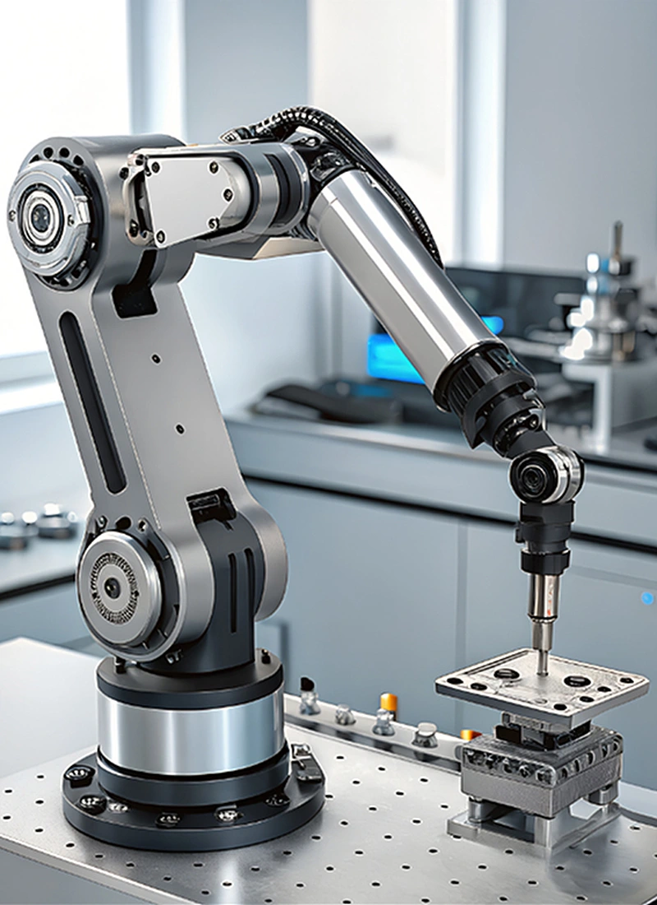

Uplifting PE Company
Job Openings
Looking for your next career move? Connect with us and we’ll refer you to Employers who are presently hiring.
Job Consultation
Need guidance on your next step? Our consultants will coach you on available career options, skills to build, and the right steps to boost employability.

Experiential
Learning Journey
Explore PE careers with on-site tours / webinar talks to enhance potential of securing a job.
Short Courses (PEARL)
Subsidised courses to induct, reskill & upskill PE talent with classroom & practical training.
SCTP Courses
90% subsidies and allowance for 3-Month full-time Precision Machining Upskilling.
Employee Testimonials
JSIT-PE took time to understand my job requirements and presented me with high-quality job opportunities matching my skills and experience.
J. Saw
JSIT-PE helped me achieve my desired career position. Prior to this, I had challenges with my job search.
T. Huong
Thank you JSIT-PE for the great experience to learn, and for opening the doors to a great career start in Precision Engineering.
C. Kok
Jobs Matching
JSIT‑PE partners with The Talent People to connect you directly with Precision Engineering employers looking to hire now. Their team posts verified job roles, screens applicants, and shortlists suitable candidates — increasing your chances of being matched quickly. This service helps streamline your job search by linking you to companies with immediate vacancies.
Get StartedJobs Matching
JSIT‑PE partners with The Talent People to connect you directly with Precision Engineering employers looking to hire now. Their team posts verified job roles, screens applicants, and shortlists suitable candidates — increasing your chances of being matched quickly. This service helps streamline your job search by linking you to companies with immediate vacancies.
Get StartedExperiential Learning Journey
Get a real feel of the Precision Engineering sector through on-site industry exposure. The programme includes introductory talks, NYP lab tours with equipment demonstrations, and company visits where you can observe operations and even attend interviews with hiring companies.
It’s a great way to explore PE careers up close and show employers your interest and potential.
Experiential Learning Journey
Get a real feel of the Precision Engineering sector through on-site industry exposure. The programme includes introductory talks, NYP lab tours with equipment demonstrations, and company visits where you can observe operations and even attend interviews with hiring companies.
It’s a great way to explore PE careers up close and show employers your interest and potential.
PEARL Programme
PEARL offers short, focused skills‑training courses designed together with Precision Engineering companies to help you enter or transition into the sector. Training combines classroom learning at NYP with practical on‑the‑job experience at partner companies.
These courses equip you with industry‑endorsed skills in areas such as metro-logy, machining and CNC operations — boosting your employability in PE roles.
PEARL Programme
PEARL offers short, focused skills‑training courses designed together with Precision Engineering companies to help you enter or transition into the sector. Training combines classroom learning at NYP with practical on‑the‑job experience at partner companies.
These courses equip you with industry‑endorsed skills in areas such as metro-logy, machining and CNC operations — boosting your employability in PE roles.